Automated test of the live site in real Chrome, run 9/29/2026, 9:58:58 PM. Site http://localhost:5173. AI model gpt-5.6-luna through Portkey. Every answer is checked against data/campus_customs.db.
154/154automated checks passed
26screenshots
3/3required checks shown
PASSoverall result
Required checks
R1. Chat checks stock and price for an item PASS
What this shows: Asked how many Fencing Left Chest Hoodies are left in XL and the price, the agent answered from the database: quantity 2 in XL and $68.00. Both numbers match the inventory and catalogue tables.
Automated assertions for this feature (7/7 passed)
PASSPrice in the answer equals the database pricedb $72.0
PASSStock in the answer equals the databaseThe Fencing Left Chest Hoodie has only 2 left in XL and costs $68.00. Woof! 🐾
PASSPrice in the answer equals the database$68.00
PASSDatabase says size L is sold out (quantity 0)
PASSAgent says clearly that it is sold outThe Champion Reverse Weave Crewneck is sold out in L. It’s currently in stock in M and XL.
PASSAgent offers the sizes that are in stockM, XL
R2. Category question fills the page with product cards PASS
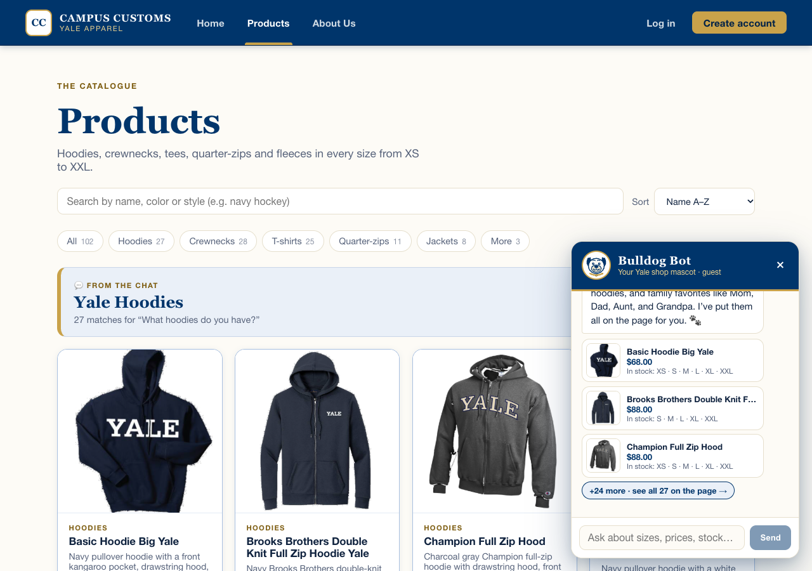
What this shows: After asking "What hoodies do you have?" the agent searched the database and the site switched to the Products page showing 27 hoodie cards (the database holds 27 hoodies), each with image, name, price and description. The chat panel stays beside the cards without covering them.
Automated assertions for this feature (4/4 passed)
PASSPage switched to the Products page with a "From the chat" bannerYale Hoodies
PASSCards match the hoodies in the database27 cards shown of 27 hoodies in the database
PASSEvery card is a real catalogue item
PASSA card added by the chat opens its detail pagehttp://localhost:5173/products/basic-hoodie-big-yale
R3. Usability feature: search and sort (Problem 9) PASS
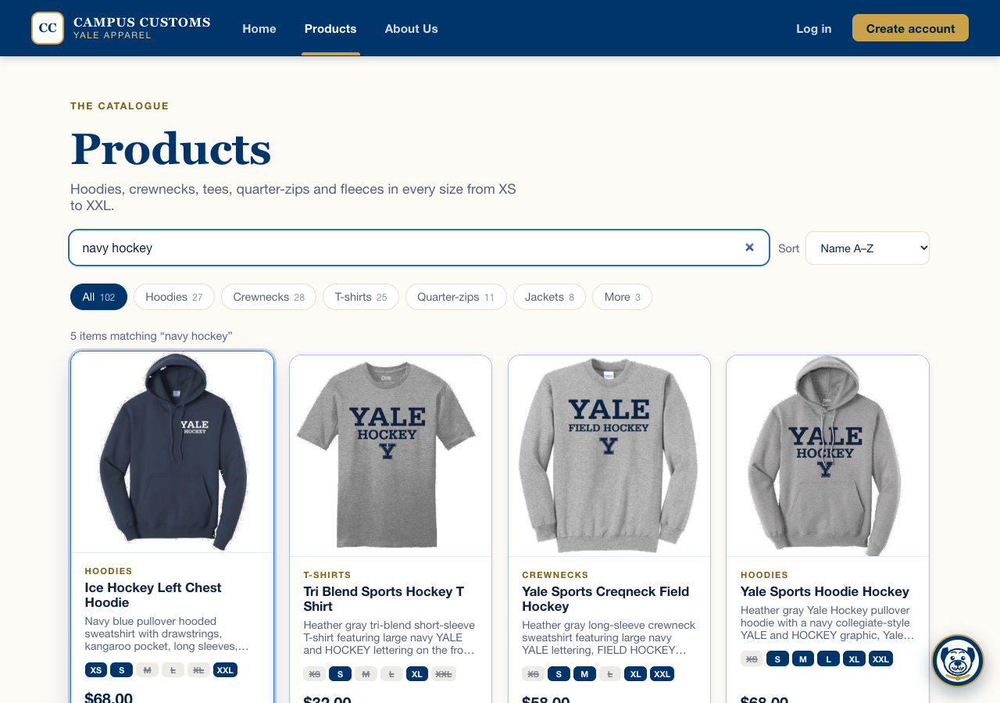
What this shows: Typing "navy hockey" instantly narrowed the 102 products to 5 matches, and the sort menu reorders them by price (verified by the assertions below). This is one of the Problem 9 usability improvements.
Automated assertions for this feature (5/5 passed)
PASS"navy hockey" narrows the grid5 items: Ice Hockey Left Chest Hoodie | Tri Blend Sports Hockey T Shirt | Yale Sports Creqneck Field Hockey
PASSSort price low to high32, 32, 58, 68, 68
PASSSort price high to low68, 68, 58, 32, 32
PASSNo match shows a friendly message and a Clear search button
PASSClear search restores the full catalogue
All other features
1. Yale banner and home page PASS
What this shows: The top bar is deep Yale blue with white links and a gold underline under the current page (Home), on a light cream-and-white page. The nav has all five required links.
Automated assertions for this feature (13/13 passed)
PASSNav bar has the 5 required linksHome | Products | About Us | Log in | Create account
PASSNav bar is deep Yale blue with white textbackground rgb(0, 53, 107), active link rgb(255, 255, 255)
PASSCurrent page (Home) has a gold underlineunderline rgb(201, 162, 74)
PASSPage background is light and airybackground rgb(253, 251, 246)
PASSThree feature cards each have a large icon (medal, ruler, robot)XS through XXL: 44px icon | Officially licensed: 44px icon | Straight from the stockroom: 44px icon
PASSTop edges are navy, medium blue and gold (all different)rgb(0, 33, 71) | rgb(40, 109, 192) | rgb(201, 162, 74)
PASSThe middle card is "Officially licensed", with the ruler and robot cards on either sideXS through XXL | Officially licensed | Straight from the stockroom
PASSMiddle card is dark blue with white textrgb(0, 53, 107), text rgba(255, 255, 255, 0.9)
PASSThe other two cards are white with blue headings
PASSHovering a feature card lifts it and adds a soft shadowlifted 6px
PASSThe shop is called Campus Customs everywhere (no borrowed store name)title "Campus Customs · Yale Apparel"
PASSUnderline moves to the current page (Products)
2. Home feature cards PASS
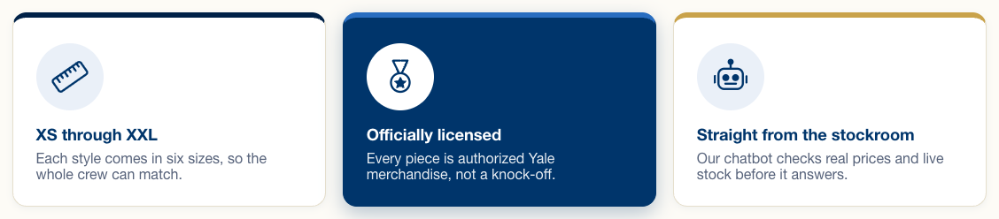
What this shows: The three feature cards no longer look alike: each has a large Yale-blue icon (medal, ruler, robot) and a different top edge (navy, medium blue, gold), and the middle card stands out in dark blue with white text.
Automated assertions for this feature are listed under its first screenshot.
3. Composed hero section PASS
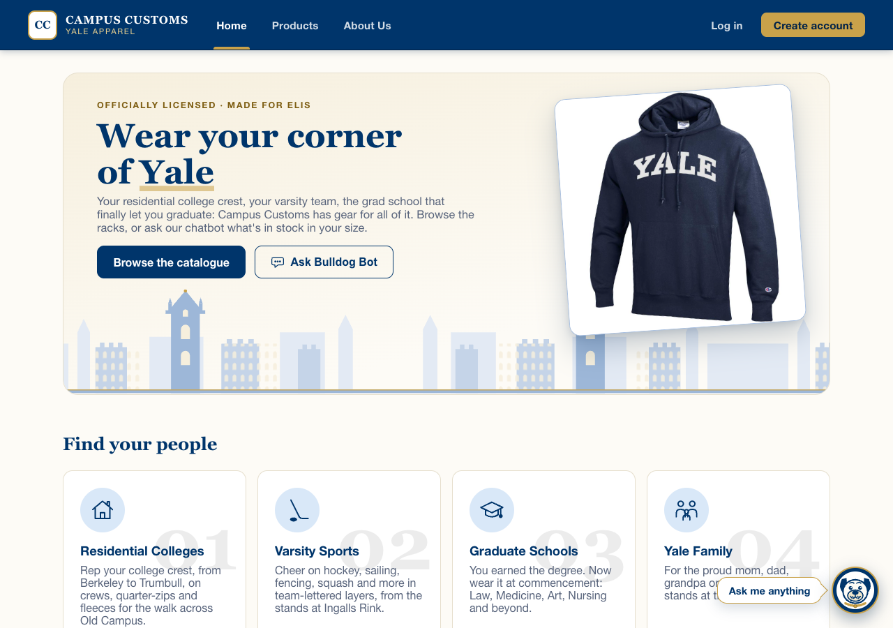
What this shows: The headline breaks cleanly ("Wear your corner / of Yale") and the text block is tighter, with the same paragraph and both buttons ("Ask Bulldog Bot" opens the chat). A sharp 900px photo of a navy Champion Yale hoodie sits in a white rounded card with a soft shadow on the right, in front of the skyline, so the hero reads as one composed block.
Automated assertions for this feature (11/11 passed)
PASSHeadline breaks cleanly as "Wear your corner" / "of Yale" (Yale is not alone)Wear your corner / of Yale (2 lines)
PASSGaps eyebrow→headline, headline→paragraph, paragraph→buttons are about one third smaller (were 16 / 8 / 25.6 px)now 10.4 / 5.6 / 16.8 px
PASSBoth buttons are still there (the second is renamed) and all other text is unchangedBrowse the catalogue | Ask Bulldog Bot
PASSThe renamed button starts with a small speech-bubble icon{"text":"Ask Bulldog Bot","iconFirst":true,"iconW":20,"iconBeforeText":true}
PASSThe other pages keep their own wording (the sign-up form still says "Join the pack")
PASSA real navy hoodie photo stands on the right side of the hero363px card
PASSThe photo is a sharp original (900px) shown at about 340px, never enlarged past its natural sizenatural 900px, shown 338px, object-fit cover
PASSThe hero is smaller: at most 470px tall (it was 588px)462px tall
PASSIt sits in a white rounded card with a soft shadow, slightly tiltedradius 16px, tilt -4°
PASSIt stands in front of the skyline, which stays a background layer
PASSIt does not overlap the text
4. Chatbot made easy to find PASS
What this shows: On a first visit the bottom-right shows the bulldog-face button with its gold border and pulse ring, plus an "Ask me anything" bubble, and the hero has an "Ask Bulldog Bot" button that opens the chat. The chat itself stays closed until someone chooses to open it.
Automated assertions for this feature (16/16 passed)
PASSButton shows the bulldog mascot face, bigger than before68px
PASSThin gold border and a soft shadow2px rgb(201, 162, 74)
PASSA gold ring pulses outward on a 3-second loop{"name":"chat-ring","dur":"3s","iter":"infinite","color":"rgb(201, 162, 74)"}
PASSThe ring really animates, fading in and out (subtle: never above 0.6 opacity)0.00 0.00 0.00 0.00 0.00 0.00 0.00 0.54 0.35 0.20 0.08 0.01 0.00 0.00 0.00 0.00 0.00
PASSFirst visit: an "Ask me anything" bubble sits next to the button{"text":"Ask me anything","leftOfButton":true,"sameRow":true}
PASSThe chat panel is NOT opened automatically
PASSOpening the chat does not move the hero or anything else behind ithero stays at 90, 104, 1100, 462.4
PASSThe panel floats: fixed, 20px from the bottom-right corner, 360px wide, at most 500px tall, z-index 1000, soft shadow{"pos":"fixed","right":20,"bottom":20,"w":360,"h":500,"z":"1000","shadow":"rgba(0, 33, 71, 0.3) 0px 24px 60px 0px, rgba(0, 33, 71, 0.16) 0px 6px 18px 0px"}
PASSIt floats above the page, including the top banner
PASSThe hero "Ask Bulldog Bot" button opens the chat panel
PASSOnce the chat is opened the bubble disappears
PASSThe bubble stays hidden on later visits, and the chat stays closed
PASSWhile the chat is open the button steps aside (the panel takes its corner)
PASSClosing the chat brings the button back
PASSClosing the chat leaves the page exactly as it was
PASSOn the Products page, opening the chat does not move the grid or filtersgrid stays at 90, 453.5, 1100, 12913.2
5. Find your people cards PASS
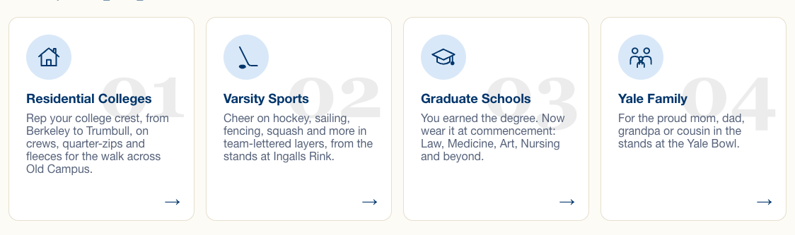
What this shows: Four cards in a row, each with a light-blue round icon (house, hockey stick, graduation cap, family), a big pale number behind the title, and one specific place named in the text (Old Campus, Ingalls Rink, commencement, the Yale Bowl).
Automated assertions for this feature (7/7 passed)
PASSFour cards sit in one rowResidential Colleges | Varsity Sports | Graduate Schools | Yale Family
PASSEach card has a round, light-blue icon in Yale Blue (house, hockey stick, graduation cap, family)rgb(217, 232, 248) rgb(217, 232, 248) rgb(217, 232, 248) rgb(217, 232, 248)
PASSNumbers 01 to 04 are large and very light grey104px rgb(236, 236, 236)
PASSThe title sits on top of the number (they overlap, and the title is in front)
PASSEach card names one specific place or thingOld Campus, Ingalls Rink, commencement, Yale Bowl
PASSHover: border turns Yale Blue and the arrow slides rightborder rgb(230, 223, 205) -> rgb(0, 53, 107), arrow moved 8px
PASSThe game-day banner below is unchangedGAME DAY FORECAST: CHILLY Layer up before kickoff Heavyweight hoodies
6. About Us page PASS
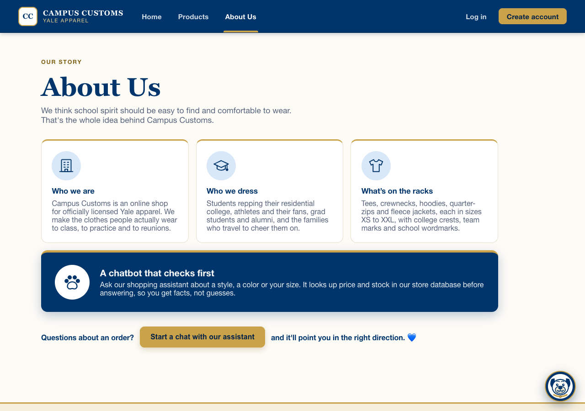
What this shows: The first three cards sit in one row, each with a Yale-blue icon (building, graduate cap, t-shirt). The chatbot card is now a full-width dark-blue banner with a paw icon, and the last line has a gold button that opens the chat. All the card text is unchanged.
Automated assertions for this feature (7/7 passed)
PASSThe first three cards sit in one rowWho we are | Who we dress | What’s on the racks
PASSEach small card has a Yale-blue icon (building, graduate cap, t-shirt)
PASSThe chatbot card is a full-width banner below the rowbanner 1000px, row 1000px
PASSThe banner is dark blue with white text and a paw iconrgb(0, 53, 107), text rgba(255, 255, 255, 0.92)
PASSAll card text is unchanged
PASSThe last line has a gold "Start a chat with our assistant" button and keeps its wordingQuestions about an order? Start a chat with our assistant and it'll point you in the right direction. 💙
PASSThe gold button opens the chat panel, like the hero button
7. Home collection opens matching products PASS
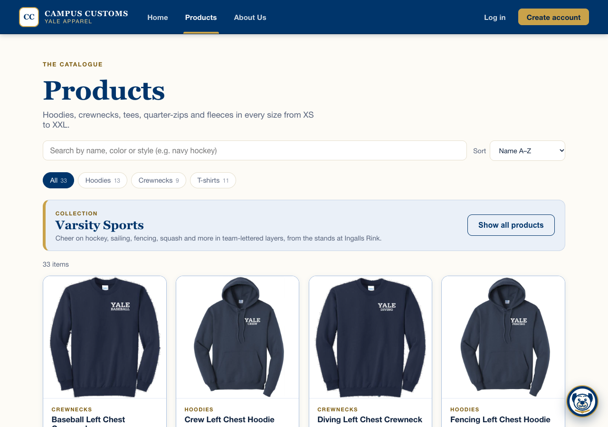
What this shows: Clicking "Varsity Sports" on the home page opened only the team-themed items (hockey, baseball, sailing and so on) under a "Collection" banner, not the whole catalogue. Each of the other collections opens its own different set (see the assertions).
Automated assertions for this feature (14/14 passed)
PASS"Residential Colleges" opens 19 products, all matching, with its own banner19 products, e.g. Benjamin Franklin 1 4 Zip | Benjamin Franklin Fleece Jacket
PASS"Residential Colleges": every category button shows items (none are empty)All, Crewnecks, T-shirts, Quarter-zips, Jackets
PASS"Varsity Sports" opens 33 products, all matching, with its own banner33 products, e.g. Baseball Left Chest Crewneck | Crew Left Chest Hoodie
PASS"Varsity Sports": every category button shows items (none are empty)All, Hoodies, Crewnecks, T-shirts
PASS"Graduate Schools" opens 13 products, all matching, with its own banner13 products, e.g. Divinity School Fleece Sweater | School Of Architecture Crewneck
PASS"Graduate Schools": every category button shows items (none are empty)All, Hoodies, T-shirts, Quarter-zips, Jackets
PASS"Yale Family" opens 12 products, all matching, with its own banner12 products, e.g. Yale Aunt Hoodie | Yale Brother Crewneck
PASS"Yale Family": every category button shows items (none are empty)All, Hoodies, Crewnecks, T-shirts
PASS"Warm layers" opens 35 products, all matching, with its own banner35 products, e.g. Basic Hoodie Big Yale | Benjamin Franklin Fleece Jacket
PASS"Warm layers": every category button shows items (none are empty)All, Hoodies, Jackets
PASSWarm layers has no T-shirts button, since it holds only hoodies and jacketsAll, Hoodies, Jackets
PASSNo two collections show the same productscolleges: 19, sports: 33, schools: 13, family: 12, warm: 35
PASSSpot checks: colleges include Berkeley and exclude the family hoodies; family includes Mom Hoodie
PASS"Show all products" from a collection returns all 102
8. Readable Yale colors PASS
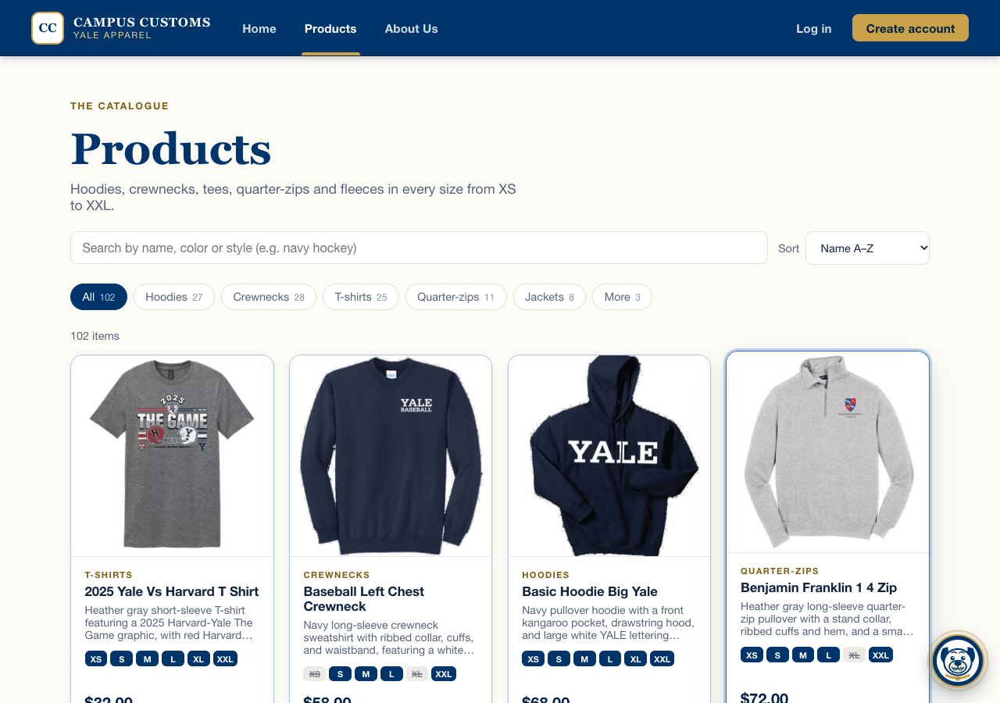
What this shows: The whole Products page uses the light Yale palette, and every text and background pair measured in the assertions below is at least 4.5:1, so text stays easy to read.
Automated assertions for this feature (5/5 passed)
PASSBody text on page: 15.2:1rgb(16, 35, 63) on rgb(253, 251, 246)
PASSProduct description (muted text) on card: 6.1:1rgb(86, 98, 122) on rgb(255, 255, 255)
PASSPrice (navy) on card: 16.0:1rgb(0, 33, 71) on rgb(255, 255, 255)
PASSCategory label (gold text) on card: 5.9:1rgb(127, 95, 20) on rgb(255, 255, 255)
PASSWhite text on the blue banner: 12.2:1rgba(255, 255, 255, 0.82) on rgb(0, 53, 107)
9. Product grid of collectible cards PASS
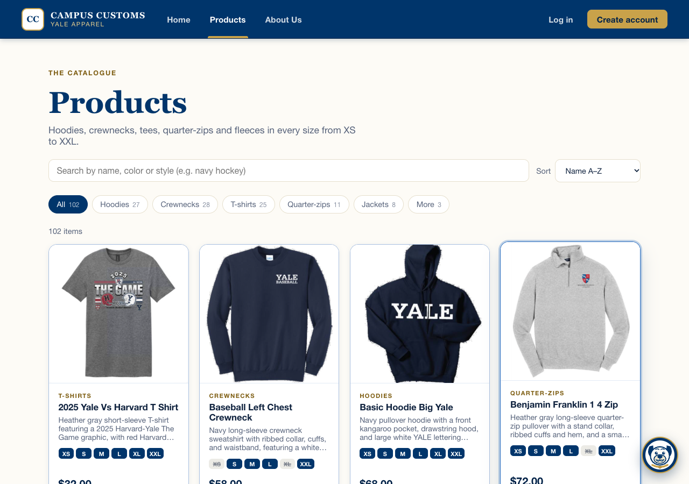
What this shows: All 102 products from the database appear as white bordered cards with picture, name, description, a bold navy price, and size chips: blue for in stock, grey and crossed out for sold out.
Automated assertions for this feature (14/14 passed)
PASSOn the full catalogue every category button shows itemsAll, Hoodies, Crewnecks, T-shirts, Quarter-zips, Jackets, More
PASSPrice is bold navy{"color":"rgb(0, 33, 71)","weight":"800"}
PASSFirst card price equals the database price2025 Yale Vs Harvard T Shirt: $32.00
PASSPictures load from the database image paths
PASSAll 102 image files are served102 images
PASSEvery photo frame is square and no photo overlaps its card text, even for tall or wide photos102 cards checked (10 photos are not square)
PASSEvery visible product photo has a white background (no black patches)93 photos checked, darkest corner value 242
PASSHover lifts the cardlift 5px
PASSHover turns the border blue and adds a glowrgb(40, 109, 192)
PASSSize chips show exactly what is in stock in the databaseXS S M L XL XXL
PASSSold-out sizes are grey with a line through them{"deco":"line-through","bg":"rgb(236, 235, 230)"}
10. Card hover effect PASS
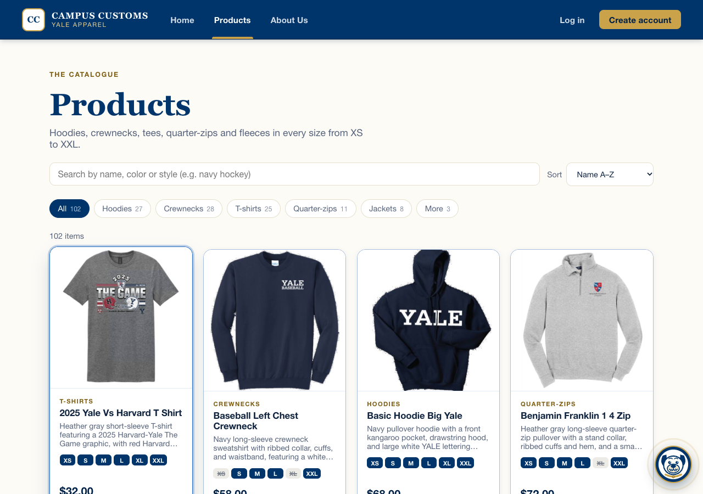
What this shows: The card under the mouse has lifted about 5 pixels and its border glows blue, so it is clear which card you are about to open.
Automated assertions for this feature are listed under its first screenshot.
11. Product detail page PASS
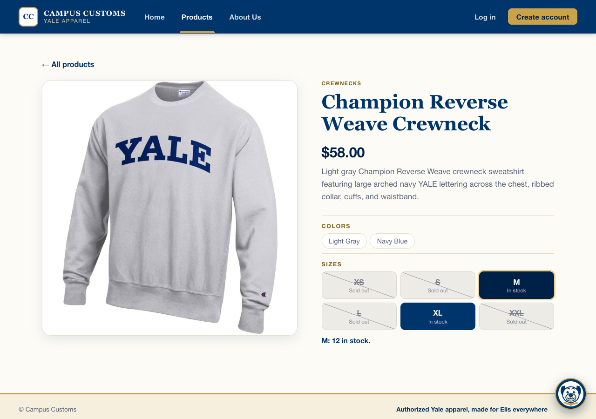
What this shows: A large picture sits beside the price, description and size buttons. In-stock sizes are blue buttons and sold-out sizes are grey and crossed out, exactly matching quantity 0 in the database.
Automated assertions for this feature (8/8 passed)
PASSClicking a card opens /products/<id>http://localhost:5173/products/champion-reverse-weave-crewneck
PASSLarge picture is shown547px wide
PASSPrice and description come from the database
PASSAll 6 sizes are listed
PASSIn-stock sizes are blue buttonsM XL
PASSSold-out sizes are greyed out, crossed and cannot be clickedXS S L XXL
PASSSold-out sizes are exactly the ones at quantity 0 in the database{"L":"0","M":"12","S":"0","XL":"12","XS":"0","XXL":"0"}
PASSPicking a size shows the exact count in stockM: 12 in stock.
12. Gold sale badge (simulated data) PASS
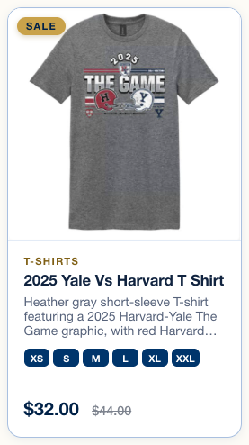
What this shows: A flagged item shows a small gold "Sale" badge and its old price crossed out. The database contains no sale items, so one item was flagged in a test response to show the design; unflagged items have no badge.
Automated assertions for this feature (3/3 passed)
PASSFlagged item shows a small gold "Sale" badge{"t":"Sale","bg":"rgb(201, 162, 74)","size":53.40625}
PASSOld price is shown crossed out next to the new price
PASSItems without sale data show no badge
13. Create account form PASS
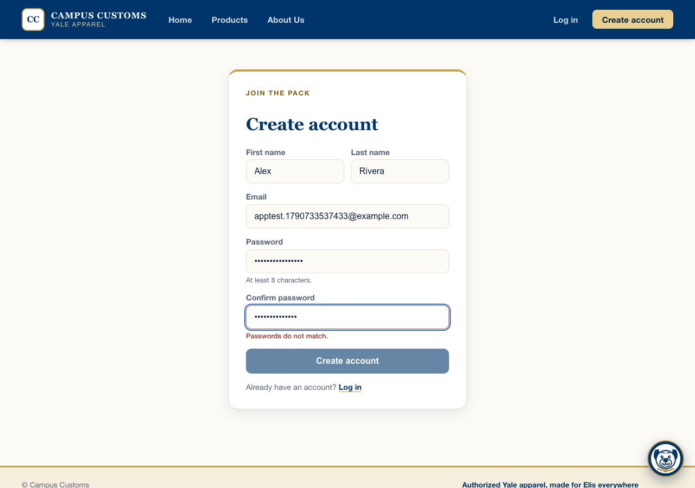
What this shows: The sign-up form asks for first name, last name, email, password and confirm password, and it stops a mismatched confirmation before anything is sent.
Automated assertions for this feature (5/5 passed)
PASSEvery sign-up field sits inside the form card
PASSMismatched confirm password shows an error and blocks the button
PASSSigning up logs the shopper in ("Hi, Alex")Hi, Alex 👋
PASSNew account saved in the users tableid 31, name "Alex Rivera"
PASSPassword is stored as a salted PBKDF2 hash, never plain textpbkdf2_sha256, 600000 rounds, 32-char salt
14. Signed up and logged in PASS
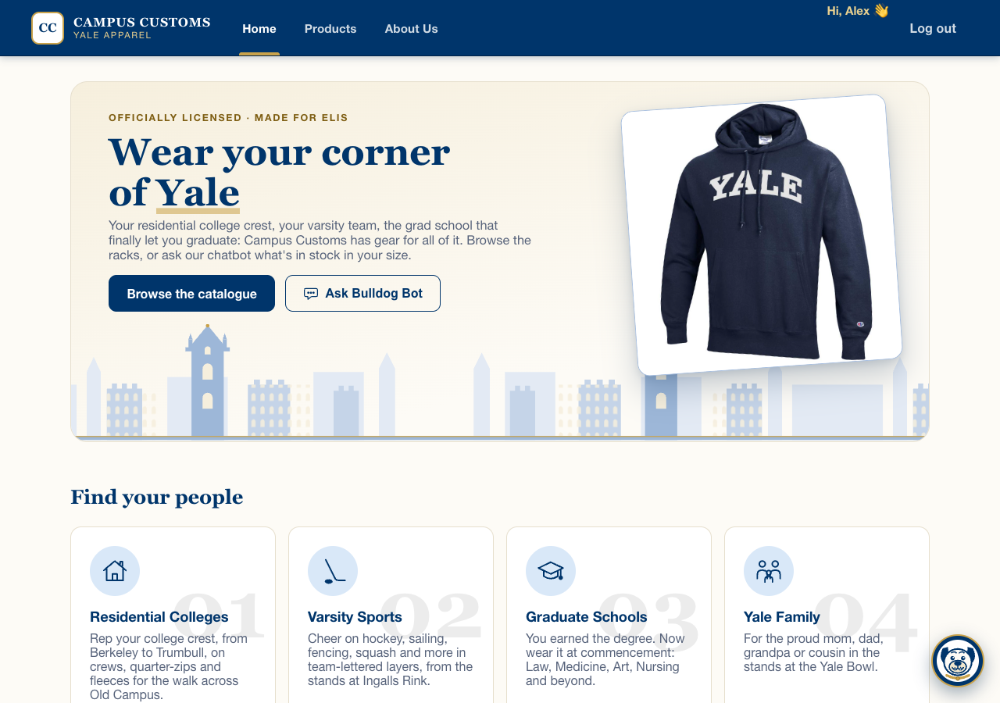
What this shows: After sign-up the banner greets the shopper by name and offers Log out. The database check confirms the new row exists with a salted PBKDF2 hash and no plain-text password.
Automated assertions for this feature are listed under its first screenshot.
15. Log in: wrong password message PASS
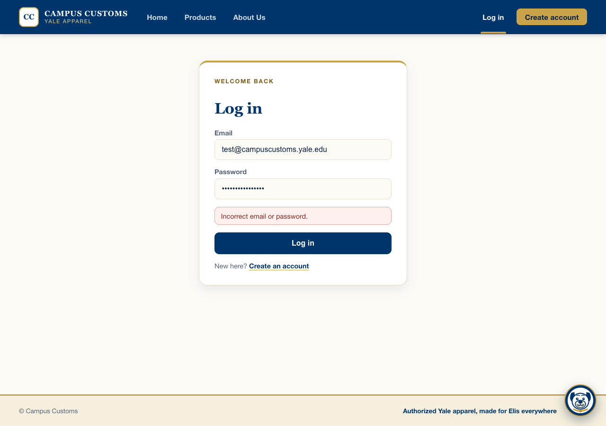
What this shows: A wrong password gives one clear message that does not reveal whether the email exists. The next assertions show the seeded test user can log in and stay logged in after a refresh.
Automated assertions for this feature (4/4 passed)
PASSLog out returns the Log in / Create account links
PASSWrong password shows "Incorrect email or password."
PASSThe seeded test user can log inHi, Test 👋
PASSLogin survives a page refresh
16. Bulldog Bot chat window PASS
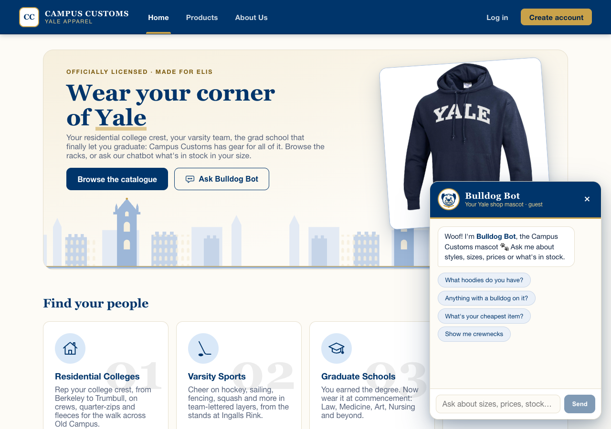
What this shows: The chat opens from the bottom-right corner with a blue "Bulldog Bot" header, a bulldog face, a mascot-voice greeting and tap-to-send starter questions.
Automated assertions for this feature (4/4 passed)
PASSChat launcher is in the bottom-right corner
PASSHeader says "Bulldog Bot" on a blue background with the bulldog face{"title":"Bulldog Bot","bg":"rgb(0, 53, 107)","face":1}
PASSSuggested-question chips are shownWhat hoodies do you have? | Anything with a bulldog on it? | What's your cheapest item? | Show me crewnecks
PASSGreeting is in the mascot voice
17. Sold-out size stated clearly PASS
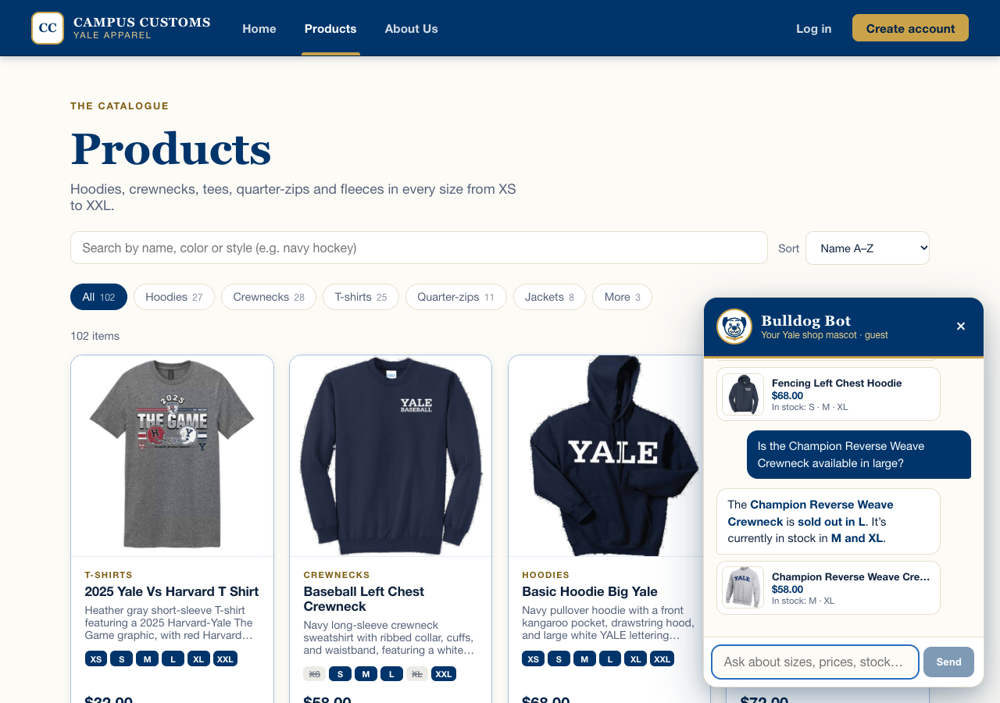
What this shows: For a size with quantity 0 in the database, the agent says plainly that it is sold out and offers the sizes that are in stock, instead of pretending it is available.
Automated assertions for this feature are listed under its first screenshot.
18. The agent knows which product you are viewing PASS
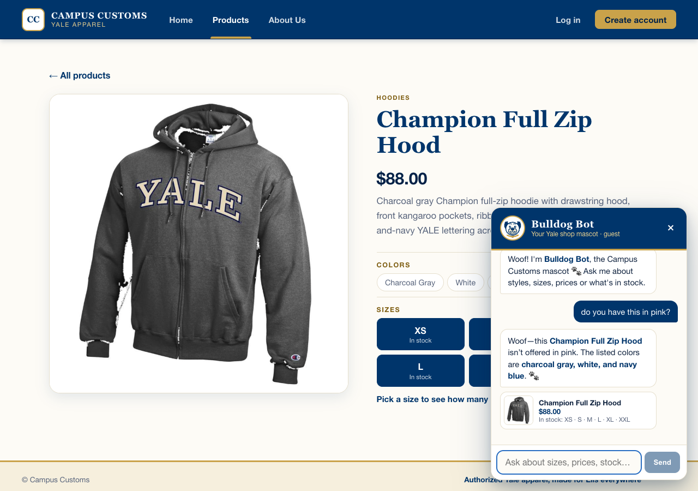
What this shows: On the Champion Full Zip Hood page, "do you have this in pink?" was answered for that hoodie without naming it, and the colors it lists match the database.
Automated assertions for this feature (2/2 passed)
PASSAnswer is about the Champion Full Zip Hood without naming itWoof—this Champion Full Zip Hood isn’t offered in pink. The listed colors are charcoal gray, white, and navy b
PASSIt correctly says there is no pink and lists the real colourscharcoal gray, white, navy blue
19. Compare two items PASS
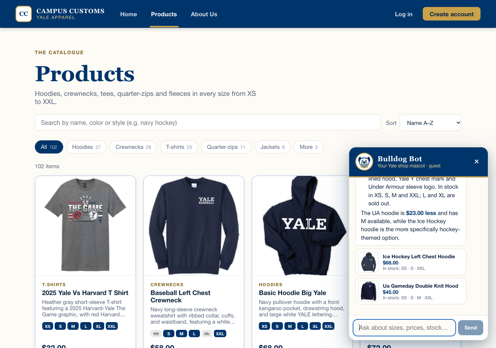
What this shows: The agent compared two hoodies side by side, and the prices and the price gap it quoted match the database. Both items are shown as cards in the chat.
Automated assertions for this feature (3/3 passed)
PASSBoth database prices appear in the answer$68.0 and $45.0
PASSPrice gap is correctgap $23
PASSBoth items appear as cards in the chat
20. Customer memory across visits PASS
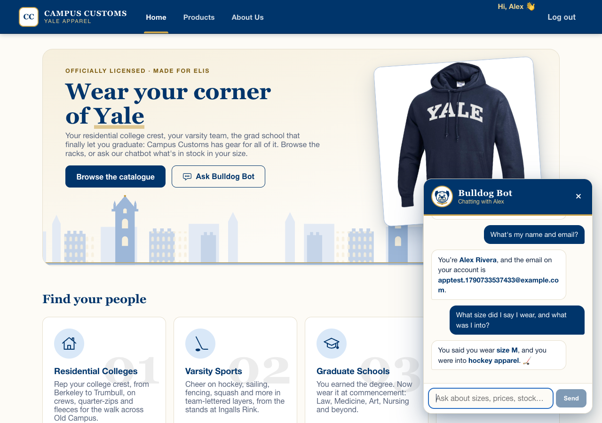
What this shows: After logging out and back in, the earlier conversation was loaded from the chat_messages table and the agent remembered the shopper's size and interest. It also knew the shopper's name and email.
Automated assertions for this feature (5/5 passed)
PASSAgent knows the shopper's name and emailYou’re Alex Rivera, and the email on your account is apptest.1790733537433@example.com.
PASSEach message and reply is saved in chat_messages4 rows for user 31
PASSLogging out clears the chat window
PASSComing back: the earlier conversation is loaded again2 of your messages restored
PASSAgent remembers from the saved historyYou said you wear size M, and you were into hockey apparel. 🏒
21. Guests can chat but are not stored PASS
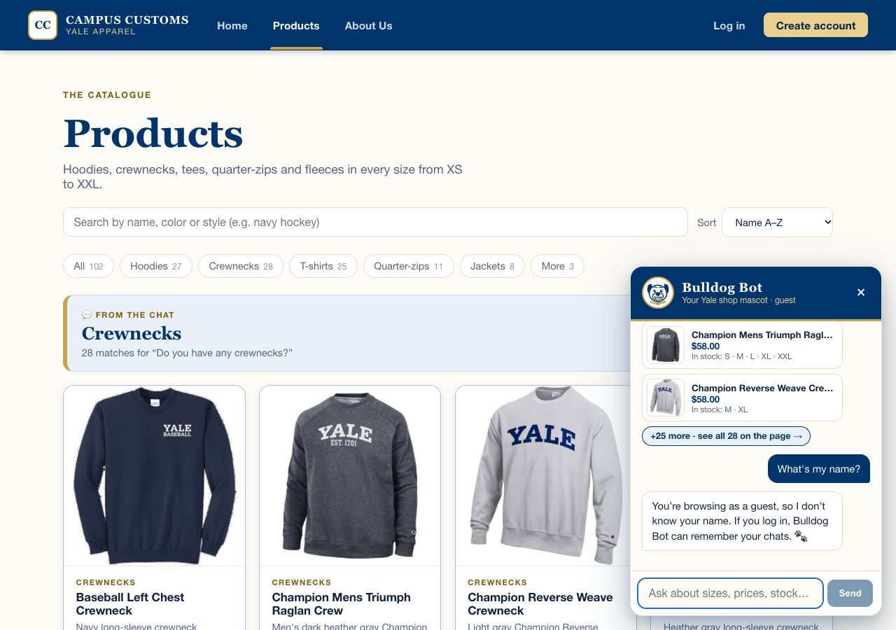
What this shows: A logged-out visitor got real answers, but no rows were added to chat_messages and the agent did not know who they were.
Automated assertions for this feature (3/3 passed)
PASSA guest gets an answer
PASSNo rows were added to chat_messages for the guest34 rows before, 34 after
PASSGuest is not given a name or emailYou’re browsing as a guest, so I don’t know your name. If you log in, Bulldog Bot can remember your
22. Chat rate limit PASS
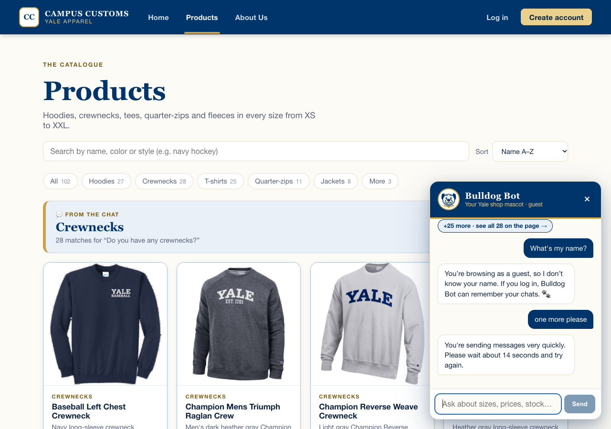
What this shows: After a burst of 12 messages in a second, the server refused the extras and the chat shows a polite "please wait" message instead of an error.
Automated assertions for this feature (2/2 passed)
PASSA burst of 12 messages is limited (HTTP 429)2 answered, 10 refused
PASSThe chat shows the friendly wait messageYou're sending messages very quickly. Please wait about 14 seconds and try again.
23. Phone-sized screen PASS
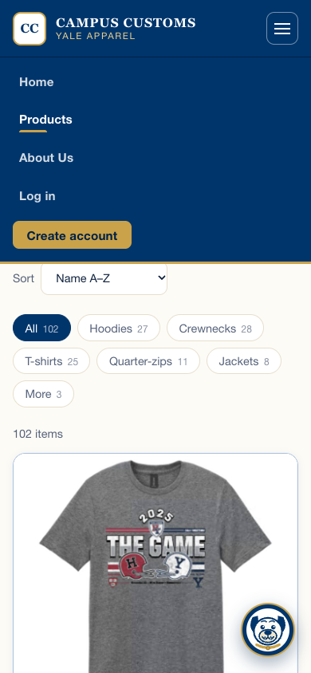
What this shows: At phone width the blue banner folds into a menu button that opens a list of all five links, and the page does not scroll sideways.
Automated assertions for this feature (9/9 passed)
PASSMenu button replaces the link row
PASSMenu opens with all links
PASSNo sideways scrolling
PASSAt 390px wide every card fits the screen, with square photos that never overlap the text102 cards, no sideways scroll
PASSAt 566px wide every card fits the screen, with square photos that never overlap the text102 cards, no sideways scroll
PASSAt 700px wide every card fits the screen, with square photos that never overlap the text102 cards, no sideways scroll
PASSOn a phone the hoodie moves below the text and the hero fits the screen{"below":true,"fits":true}
PASSOn a phone the sign-up form fits its card and the screen
PASSOn a phone the log-in form fits its card and the screen